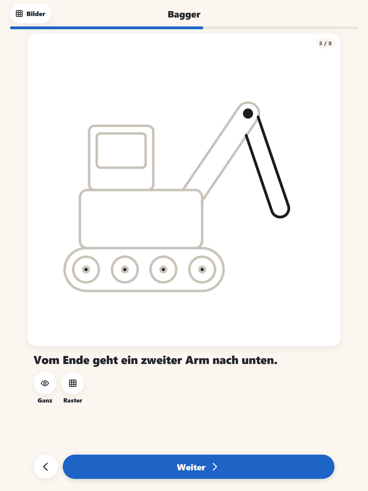
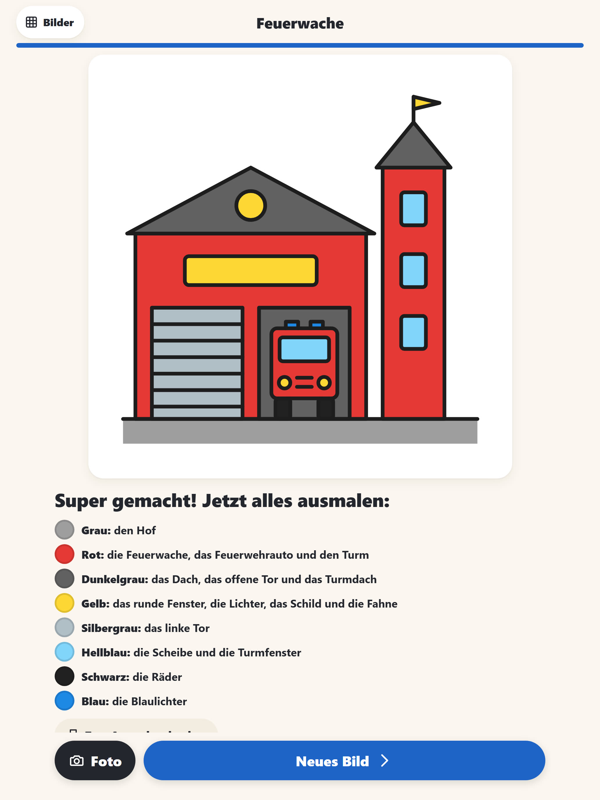
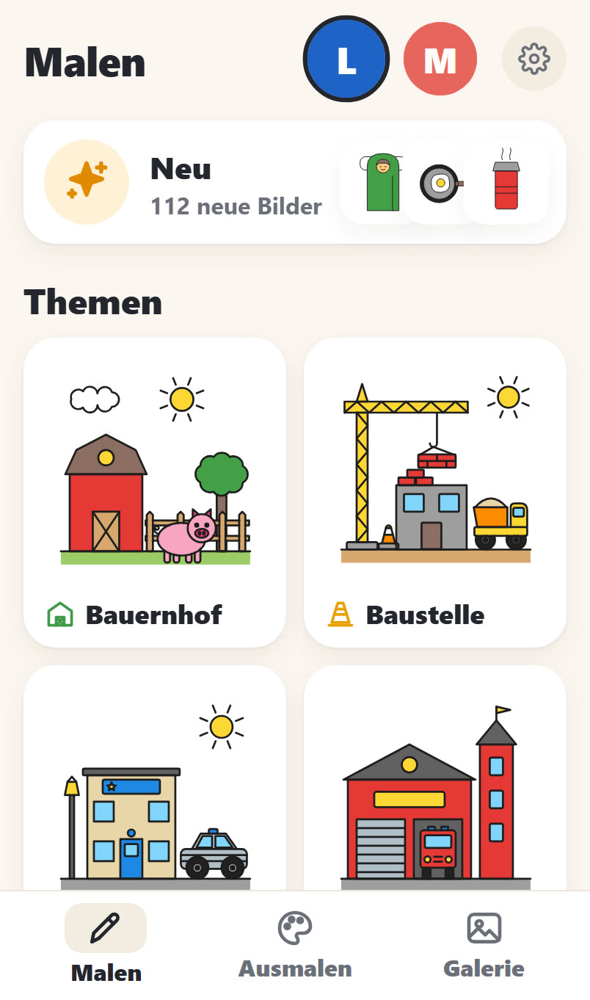
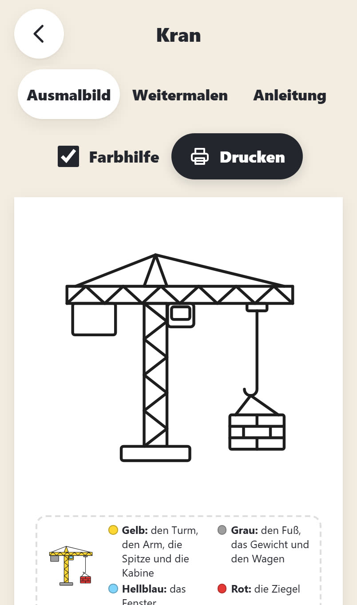

So funktioniert es
Das Tablet steht neben dem Blatt. Die App zeigt den nächsten Strich, das Kind malt ihn nach.
Thema wählen
Große Bildkacheln für Bauernhof, Baustelle, Feuerwehr, Zoo und viele mehr. Lesen muss man dafür nicht.
Bild antippen
Die App zeigt, welche Stifte man braucht. Ein Tipp auf „Los geht’s“ startet.
Mitmalen
Jeder Schritt erscheint in Schwarz, das schon Gemalte wird hellgrau. Ein kurzer Satz sagt, was zu tun ist.
Ausmalen und zeigen
Am Ende steht, welcher Teil welche Farbe bekommt. Ein Foto vom fertigen Blatt kommt in die Galerie.
Was Color kann
Für Kleine und Große
Jedes Kind hat ein Profil mit Foto. Die Kleinen bekommen große Formen und 3 bis 4 Schritte, die Großen mehr Details und ein Raster zum Abmalen.
Ausmal-Hilfe
„Rot: den Kasten und das Führerhaus. Schwarz: die Räder.“ Die Farbflächen überschneiden sich nie, so geht nichts beim Ausmalen schief.
Zum Ausdrucken
Jedes Bild gibt es als A4-Ausmalbild mit Farbhilfe, als halb fertiges Blatt zum Weitermalen und als ganze Anleitung auf einem Blatt.
Eigene Themen und Neues
Für jedes Kind lassen sich die Lieblingsthemen einstellen, damit die Auswahl überschaubar bleibt. Neue Bilder bekommen ein Schildchen, bis das Kind sie angeschaut hat.
Galerie
Fotos der fertigen Papierbilder, sortiert nach Kind. Bilder, die schon gemalt wurden, bekommen einen Stern.
Auch ohne Internet
Einmal geöffnet, läuft die App auch im Flugzeug oder im Urlaub, mit allen Bildern und der Galerie.
iPad und iPhone
Gemacht für Tablet und Telefon, hoch und quer, mit großen Knöpfen für kleine Hände.
Die Themen
Einzelne Motive für die Kleinen, knifflige Fahrzeuge und Tiere für die Großen und ganze Szenen wie die Feuerwache oder den Campingplatz.
Aus der App



